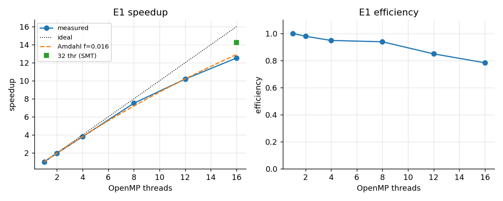
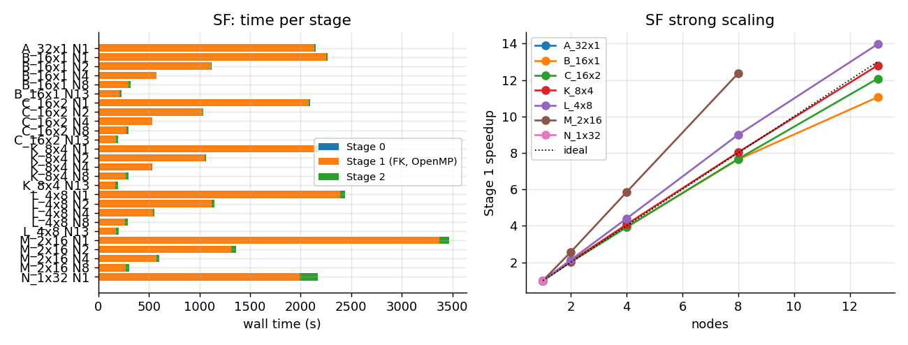
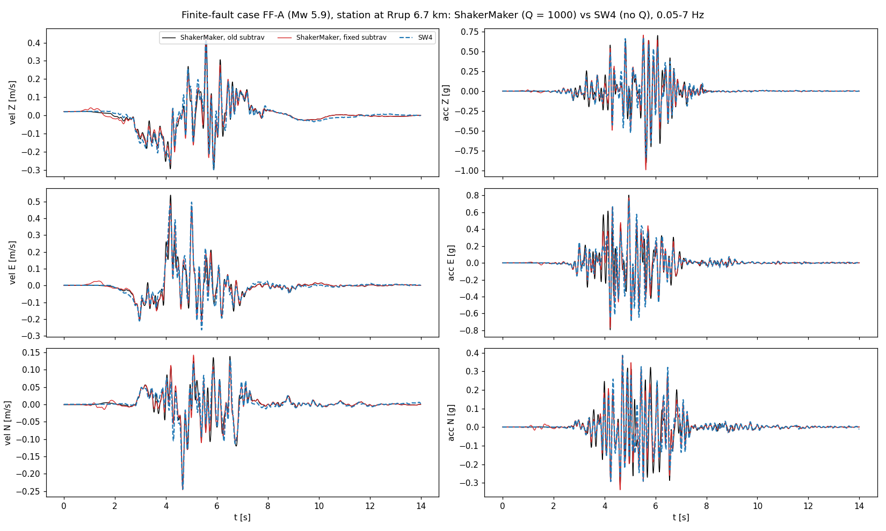

Performance on a cluster: MPI, OpenMP and the two stages¶
This page records the scaling and optimisation work done on ShakerMaker in October 2026: what was changed, what was measured, and what was not adopted. Every number comes from runs on one cluster, so treat it as a reference for similar hardware, not as a guarantee.
Hardware. A cluster of AMD Ryzen 9 5950X nodes (16 cores / 32 hardware threads, ~64 GB), 2.5 GbE between nodes, shared NFS. Exclusive nodes in every run. One run per configuration unless stated, so differences below ~3 % are not conclusive.
1. Where the time goes¶
run_nearest / the OP pipeline runs in three stages:
| Stage | Work | Parallelism |
|---|---|---|
0 gen_pairs |
source-receiver pairs and unique GF slots | rank 0 alone, seconds to minutes |
1 compute_gf |
one FK Green's function per unique slot (subgreen + subfk) |
MPI over slots, OpenMP inside the FK kernel |
2 run_fast |
per source: subgreen2, STF convolution, shift and sum |
MPI only |
Stage 1 dominates (90-99 % of the wall time in every case below).
Stage 0: grouping on one process¶
Stage 0 visits the pairs in order and puts each one in the existing slot that covers it (every difference within its tolerance) with the smallest L1 distance, or opens a new slot. Each decision depends on the slots opened before it, so the grouping is sequential. The previous implementation compared every pair with every slot (cost pairs x slots) after gathering the geometry of all pairs on rank 0 (32 bytes per pair, ~200 bytes per pair on the node), while the other ranks waited.
Now rank 0 builds the map alone. A slot that covers a pair can only lie in
one of the 27 cells around it when the cells are slightly larger than the
tolerances, so a hash table over those cells gives the candidates, tested
with the same coverage rule, distance and tie rule (lowest slot index). The
geometry is computed one block of stations at a time with the same NumPy
expressions, and the representative of a slot is the pair that opened it,
so the final sorts are gone. The map is the same, dataset by dataset.
SM_S0_LEGACY=1 runs the previous path.
DRM boxes of 8179 receivers with a 32768-subfault fault (2.7e8 pairs, tolerances 40 / 5 / 200 m):
| previous (10 nodes x 16 ranks) | now (one process) | |
|---|---|---|
| 14 460 slots | 1 888 s | 173 s |
| 20 688 slots | 2 666 s | 190 s |
| 25 686 slots | 3 280 s (grouping 3 215 s, gather 31 s, sorts 31 s) | 195 s (grouping 183 s) |
| memory | ~99 bytes per pair on rank 0 | 1.7 GB in total (~6 bytes per pair) |
The previous grouping cost 0.125 s per slot at this size; the new one does
not depend on the number of slots (57 380 slots: 259 s). Eleven such boxes
ran at once on one node in 4.5 min (1.7 GB each). The three maps with a
previous reference are identical to it. Stage 0 therefore needs one process:
inside a many-node stage='all' job the other nodes now wait minutes instead
of up to an hour, and a separate stage=0 job on one node is enough.
2. OpenMP in the FK kernel (PR #19)¶
subfk.f parallelises the wavenumber loop and the inverse-FFT loop with
OpenMP. The question raised in the review was: one node, 32 MPI ranks without
OpenMP against 16 ranks with OpenMP, comparing results and performance.
Results are unchanged. Traces are bit-identical with 1 to 32 threads;
the _gf.h5 and .h5drm files are identical (sha256) across 8 layouts and
1, 2 and 4 nodes; against SCEC LOH.1 the correlation stays >= 0.999 on the
three components.
One Green's function (LOH.1, nfft 4096):
| Threads | 1 | 2 | 4 | 8 | 16 | 32 (SMT) |
|---|---|---|---|---|---|---|
| Time (s) | 4.81 | 2.46 | 1.27 | 0.64 | 0.38 | 0.34 |
| Speedup | 1.0 | 1.96 | 3.79 | 7.51 | 12.5 | 14.2 |

The requested comparison (one node, DRM box of 7635 nodes, 1331 GFs):
| Layout per node | Stage 1 (s) | Node CPU |
|---|---|---|
| 32 ranks x 1 thread | 630 | 99 % |
| 16 ranks x 2 threads | 628 | 93 % |
| 16 ranks, OpenMP threads not set | 604 | 98 % |
| 16 ranks x 1 thread | 688 | 50 % |
32 x 1 and 16 x 2 tie. Both beat 16 x 1 by ~10 % because they also use the SMT threads. Layouts with few ranks per node lose because, before the change in section 3, rank 0 only received and wrote.
Across nodes (strike-slip fault model, 1810 GFs of ~12 s each, up to 13 nodes):
| Layout per node | 1 node | 2 | 4 | 8 | 13 |
|---|---|---|---|---|---|
| 16 x 1 | 2249 s | 1112 | 572 | 294 | 203 |
| 16 x 2 | 2077 | 1030 | 529 | 271 | 172 |
| 8 x 4 | 2152 | 1050 | 528 | 268 | 168 |

16 x 2 scales 12.1x on 13 nodes (93 %). The hybrid layouts win 7-10 % over pure MPI on 1-8 nodes and 15-17 % on 13 nodes, where each rank gets only a few GFs and longer single-thread GFs leave the last rank running alone.
Recommended launch: 16 x 2 per node up to 2 nodes, 8 x 4 from 4 nodes.
export OMP_NUM_THREADS=2 OMP_PLACES=threads OMP_PROC_BIND=close
mpirun -np $((16*NNODES)) --map-by ppr:16:node:PE=2 --bind-to hwthread \
--use-hwthread-cpus python script.py
# from 4 nodes
export OMP_NUM_THREADS=4 OMP_PLACES=threads OMP_PROC_BIND=close
mpirun -np $((8*NNODES)) --map-by ppr:8:node:PE=4 --bind-to hwthread \
--use-hwthread-cpus python script.py
3. Stage 1: dynamic scheduling¶
With the round-robin split, at 10 nodes workers spent up to 454 s blocked
sending to rank 0 and the slowest rank did 1.5x the work of the fastest.
compute_gf now uses a master-worker scheme when running under MPI:
- rank 0 hands the next slot to whichever worker finishes first, two slots in flight per worker;
- workers compress each slot (zlib level 4, the HDF5 gzip deflate) and send
it with blocking sends; rank 0 stores it with
write_direct_chunk; - rank 0 also computes: a receiver thread handles MPI and the HDF5 writes.
This needs the
threadsafewrappers incore.pyf(rebuild the core) and MPI initialised withMPI_THREAD_MULTIPLE(the mpi4py default); - slots go out longest first, using the measured cost of a previous run when available.
The database layout is unchanged and the results are bit-identical to the round-robin loop with the same core.
| Variable | Default | Effect |
|---|---|---|
SM_GF_STATIC=1 |
off | use the original round-robin loop |
SM_GF_RANK0_COMPUTE=0 |
on | rank 0 only receives and writes |
SM_GF_COSTFILE=<path> |
unset | order slots by a previous <gf_file>.slotcost.npy (written by every run) instead of the geometric proxy |
| Model (GFs), 10 nodes, 8 x 4 | Round-robin | Dynamic | Dynamic + compiler flags |
|---|---|---|---|
| Strike-slip, medium (1810) | 286 s | 207 s (-27 %) | - |
| Strike-slip, large (9100) | 1327 s | 922 s (-30 %) | 810 s (-39 %) |
Blocking time fell from 83-454 s to 0.4 s and the load imbalance from 1.5 to 1.01. On one node the gain comes from rank 0 computing (-6 to -10 %).
Finite-fault case FF-A (10 nodes). Reverse fault (strike 195, dip 40,
rake 90), plane 7.0 x 11.7 km from 3.0 to 10.4 km depth, Mw 5.9, 4096 FFSP
subfaults (mean slip 0.47 m, max 1.8 m), SRF2 slip-rate functions. Three
surface stations at Rrup 6.7, 11.4 and 16.1 km (Rjb 0.03-14.6 km). Crust:
five layers down to 57.7 km over a half-space (Vs 2.36-4.74 km/s, Qs
118-237). FK: dt 0.0025, nfft 16384, dk 0.083, tb 800, tmax 28.8;
5015 Green's functions. The truncated crust keeps the first three layers
and makes the fourth (Vs 3.92 km/s) a half-space below 32.8 km.
| Crust | Production launch (32 ranks, OpenMP not set) | Dynamic + flags, 8 x 4 |
|---|---|---|
| full | 20 400 s | 17 256 s (-15 %) |
| truncated at 32.79 km | 10 089 s | 8 147 s (-19 %) |
| truncated, Q = 1000 | 10 099 s | 8 119 s (-20 %) |
The gain is smaller than on the synthetic models: this FK kernel looks memory-bandwidth bound (throughput per node barely changes with the rank x thread split).
Several slots per core call¶
For each frequency and wavenumber the FK core evaluates a kernel (the
response of the layer stack) that does not depend on the horizontal distance;
the distance only enters through the Bessel terms. subfk already loops over
several distances inside one kernel evaluation, so compute_gf groups the
slots that share the source and receiver depths into one core call.
The wavenumber step is dk*pi/max(hs, x), where hs is the total finite
thickness of the crust split at the source and receiver depths (as the core
computes it, in float32). Distances up to hs share the step, so one call
with all of them returns, for each slot, exactly what a call per slot
returns; slots beyond hs keep a call of their own. Each extra distance
costs 3-6 % of a call. The batching is on by default and bit-identical.
| Case (Stage 1, same launch as the reference) | Slots | Core calls | One call per slot | Batched | Results |
|---|---|---|---|---|---|
4096 sources, 3 stations, crust with 57.7 km of finite layers, nfft 16384; 10 nodes x 8 x 4 |
5015 | 102 | 18 150 s | 1 900 s (9.6x) | bit-identical database and motions |
32 768 sources, 1 station, crust with 15.5 km of finite layers, station farther than hs from the fault; 2 nodes x 16 x 2 |
2703 | 2703 | 19 948 s | 19 669 s | bit-identical (nothing to group) |
The gain depends on how many slots fall within hs: deep crust models and
stations near the source benefit most.
| Variable | Default | Effect |
|---|---|---|
SM_GF_BATCH=0 |
on | one core call per slot (previous behaviour) |
SM_GF_BATCH_MB |
512 | memory per call; a distance needs about 9*2*nfft*12 bytes (tdata plus the wavenumber sums) |
SM_GF_BATCH_MAX |
64 | upper limit of distances per call |
The wavenumber sums in subfk live on the heap (an automatic array of
nx*9*2*nfft complex values would overflow the default stack); the core
must be rebuilt.
Compact Green's function database¶
The core returns tdata in float32 and, with smth = 1, only the first
smth*nfft of its 2*nfft samples are non-zero. SM_GF_F32=1 stores
/tdata as float32 with only those samples (the attribute nt_full keeps
2*nfft); Stage 2 reads both layouts and zero-pads the compact one, so the
core receives exactly the same values. Off by default, because tools that
read /tdata directly expect the original layout. It applies to the MPI
(dynamic) Stage 1 path.
4. Compiler flags¶
Fortran core rebuilt with different flags, everything else equal:
| Flags | Time per GF | Results |
|---|---|---|
-O3 (default) |
reference | reference |
-O3 -march=znver3 -ffp-contract=off |
-7 to -12 % | bit-identical |
-O3 -march=znver3 (FMA contraction) |
faster | rejected: t0 moves 1 ulp, 10 % of .h5drm traces off by > 10 % |
-Ofast |
faster | rejected, same reason |
-ffp-contract=off is what keeps the results identical. The flags are not
the default because -march is machine specific; use -march=native with
-ffp-contract=off when building for one cluster.
5. Stage 2¶
run_fast gave each station to one rank, so with 3 stations only 3 ranks
worked. Two changes:
- sources split over all ranks when there are fewer stations than ranks:
each rank sums its share on the output grid with the same placement as
Station.add_to_response(now at the real time, fraction of a sample included), and an MPI Reduce adds the parts on rank 0. With more stations than ranks (a DRM box) the one-rank-per-station loop is kept, since it already uses every rank and the split would add one Reduce per station (2067-node DRM box: 4.7 s with one rank per station, 12.9 s split).SM_S2_SPLIT=1forces the split,SM_S2_SPLIT=0disables it; - split crust models cached per (source depth, receiver depth).
- STF convolution (
SM_S2_CONV=fast, off by default): each source time function is resampled once per (source, pair time step) instead of once per component and pair, the three components are convolved in one FFT, and only up to the last sample thatadd_to_responsekeeps (the convolution is causal, so those samples do not change). The pair time step ist[1] - t[0]of the pair's own grid, which differs from the nominaldtin the last bits and can change the resampled STF by one sample, so the cache is keyed on its exact value. - compact database (
SM_GF_F32=1, see section 3): less to read and decompress, and no float64 to float32 conversion per pair.
Stage 2 of the 4096-source, 3-station case on one node (16 x 2), same database:
| Variant | Stage 2 | Read | subgreen2 |
Convolution | Motions |
|---|---|---|---|---|---|
| reference | 6.92 s | 2.41 s | 1.50 s | 2.61 s | - |
| compact database, gzip | 3.95 s | 0.92 s | 0.41 s | 2.29 s | bit-identical |
| compact database, uncompressed | 3.85 s | 0.53 s | 0.46 s | 2.50 s | bit-identical |
SM_S2_CONV=fast |
6.95 s | - | - | 1.43 s (from 2.67) | 1e-7 of the peak |
The convolution gain grows with the ratio between the trace length
(2*nfft) and the output window: 3.1-3.5x on a small DRM box with
nfft 8192 and a 10 s window.
| Case | Before | Sources split | Difference |
|---|---|---|---|
| FF-A (4096 sources, 3 stations), 1 node | 42.0 s | 5.5 s (16 ranks) | 4e-14 |
| FF-B (32 768 sources, 3 stations), 1 node | 633 s | 251 s (32 ranks) | 2e-13 |
FF-B: same mechanism and crust as FF-A, plane 60 x 23.3 km from 3.0 to 17.9
km depth, Mw 7.1, 32 768 subfaults, three stations above the rupture (Rrup
4.0-6.7 km, Rjb < 0.1 km), nfft 32768, dk 0.044, tmax 54.2, 28 932
Green's functions.
The crust cache alone is bit-identical and saves ~10 %.
Grouped Stage 2 (SM_S2_GROUP=1)¶
For one source, subfocal combines the components of the slot's Green's
function with coefficients that depend only on the source mechanism and the
source-receiver azimuth, and the convolution with the source time function
is linear, so the two can be swapped. With SM_S2_GROUP=1 the components
are convolved once per (source, slot, pair time step) and every receiver of
that group only applies its own coefficients and integer shift. On a DRM box
of 8179 receivers and a 32 768-subfault fault there are 6.4e5 such groups
for 2.7e8 pairs (about 400 receivers per group).
The other parts of the grouped path:
- only the samples that
add_to_responsekeeps are computed (the output window is about a third of the2*nffttrace); t0comes fromcore.subtravwith the single-precision steps ofsubgreen2, so windows, shifts and time grids are those of the per-pair path;subgreen2is no longer called per pair;- receivers go in chunks (
SM_S2_CHUNK, or as many as fit inSM_S2_CHUNK_MB, default 1024 MB of buffers per rank); within a chunk each rank owns a set of slots balanced by pair count, reads each slot once, and the partial responses are summed with one Reduce per chunk (SM_S2_ORDER=sourcegives each rank a block of sources instead); - groups of fewer than 3 receivers combine first and convolve 3 components;
- with Numba a compiled kernel combines and adds each group in one pass over
the receiver buffers (
SM_S2_FUSED=0uses a matrix product instead).
The combination is done in float64. The per-pair path combines in single
precision inside subfocal, and that round-off, summed over the sources, is
the only difference: recomputing every pair on its own in float64 gives the
grouped result to 2e-15. That is why the option is off by default.
| Case | Per-pair path | Grouped | Difference / peak |
|---|---|---|---|
| DRM box, 64 receivers x 32 768 subfaults, float64 gzip database, 2 nodes x 16 | 869 s (SM_S2_CONV=fast: 737 s) |
128 s | 1.7e-5 |
| Same box, all 8179 receivers, 2 nodes x 16, without the kernel | previous code: 33 197 s on 10 nodes | 11 961 s (14x fewer node-hours) | 3.2e-5 over 24 534 traces |
| Same box, float32 compact database of the current core, all receivers | 9 896 s on 10 nodes (SM_S2_CONV=fast) = 27.5 node-h |
3 507 s on 3 nodes = 3.1 node-h (database copied to each node's local disk first, 171 s) | 3.5e-5; peaks within 5.4e-5; response spectra within 1.8e-4 |
| One surface receiver x 32 768 subfaults, 1 node x 16 | 38.6 / 41.8 s (fast: 31.0 / 33.9 s) |
12.6 / 17.7 s | 0.8-3e-5 |
| 3 surface receivers x 4096 subfaults, 1 node x 16 | 2-9 s | 2-7 s | 4e-7 |
With few receivers the gain comes from the cropped window and from no
longer calling subgreen2 per pair; with many it also comes from the shared
convolutions. What remains is the shifted add into the receiver buffers,
about 1 MB per pair, which is bound by memory bandwidth (about 42 GB/s per
node with 16 ranks): fewer operations per sample barely change it.
Reading the database from each node's local disk instead of the shared one
cut the read time from about 1 300 s to 57 s per rank on the whole box.
6. What was tried and not adopted¶
- FK kernel on a GPU (RTX 5090, PyTorch prototype): FP64 throughput on that card is too low; the best case was 3.4x in FP64 and the full port was not justified.
- Stage 2 summed in the frequency domain (CPU): correct (1e-7) but not faster than splitting the sources.
- Stage 2 on the GPU: 10x faster than the old loop and ~4x faster than
splitting the sources on a 32 768-source, 3-station case, but the
acceleration differs by up to
1e-3 of the PGA away from the peak, with broadband content. The CPU
reference is accurate to 1e-7, so this is not round-off: the prototype
resamples each STF with the nominal
dt, whileconvolveuses each pair's own time step. Doing the same on the CPU reproduces the error (1e-3 of the PGA in acceleration, centroid 45-50 Hz, maximum away from the PGA; below 1e-4 in response spectra). Not adopted yet; its natural use is many FFSP realisations on one GF database, which can stay in GPU memory. - Coarser time step with the same unfiltered band (Stage 1): the FK cost
scales with the square of the Nyquist frequency, and below the start of
the taper the spectrum does not depend on
dt. On the 4096-source, 3-station case,dt0.005 s with taper 0.8 anddt0.01 s with taper 0.6 (same 20 Hz unfiltered band) made Stage 1 4.1x and 16.4x faster, but response spectra changed by 3-14 % below 0.5 s: the source time functions are also discretised with the rundt. It would need separate time steps for the Green's functions and the sources. - Grouping slots beyond
hsby distance band (Stage 1): each group uses the wavenumber step of its largest distance. 7.7x on the 32 768-source, 1-station case, but results change by a few per cent wheredkis not converged; it can only be judged against a reference with a finerdk.
7. Correctness: the subtrav fix checked against SW4¶
subtrav returns the first-arrival time t0. It took 1-based layer indices
where its ray loop needs 0-based ones, so the ray crossed the wrong layers
whenever source and receiver were not in adjacent layers. With OP, Stage 2
places the GF of a slot at the t0 of each real pair, so a wrong t0 puts
each subfault at the wrong time. On FF-A the fix changes t0 in
99 % of the slots (median 0.16 s, max 1.05 s).
Check: FF-A with the crust truncated at 32.8 km, run with the old and the fixed core (Q = 1000 in every layer) and with SW4 on the same crust, source and stations (7 Hz, h = 33.3 m, no attenuation), compared up to 14 s, 0.05-7 Hz:
| Station at Rrup 6.7 km (E / N / Z) | Old subtrav |
Fixed subtrav |
|---|---|---|
| correlation with SW4 | 0.919 / 0.898 / 0.955 | 0.973 / 0.944 / 0.962 |
| normalised misfit | 0.40 / 0.45 / 0.30 | 0.23 / 0.33 / 0.27 |
| PGV / PGV SW4 | 1.08 / 0.93 / 0.95 | 0.98 / 1.01 / 1.02 |

The station closest to the fault is where the two cores differ; the old core adds acceleration pulses that SW4 does not have. At the two farther stations both cores tie (correlation 0.85-0.95). Runs made before the fix can differ by up to about +-25 % in PGA and short-period PSA at stations near the fault; long periods barely change.
With the case's own Q (Qs 118-196) ShakerMaker came out at 0.5-0.9 of SW4, decreasing with distance; with Q = 1000 it is at 0.85-1.05. Compare against an elastic SW4 run with Q = 1000 in ShakerMaker.
8. run_inter: interpolated Green's functions¶
run_inter(scheme='tensor') (guide,
method) adds its own performance pieces:
| Piece | What it does | Measured |
|---|---|---|
frequency cut (freq_cut) |
the FK frequency loop stops at 1.4 × freq_cut |
core 33 / 57 / 122 / 292 times faster for 20 / 15 / 10 / 5 Hz bands (nfft 65 536, dt 0.0025 s) |
| candidates in one call | a level computes all its candidate distances in calls that share the wavenumber kernel | each extra distance ~5 % of a call |
| streamed Stage 1 | a level is selected and written as soon as its calls are back | memory constant (~7 GB with 8 processes for 1 792 levels; the first version needed ~650 GB on rank 0) |
| reduced database | samples up to tmax, ZFP 20 bits, one sample every q with freq_cut |
~118 KB per Green's function instead of 2.4 MB (nfft 65 536) |
| Stage 2 kernel | per receiver, the 4 distance nodes are combined and projected first, then placed with 4 time taps | Stage 2 150 → 72.6 s on 787 000 pairs (1 process), same output to 1.8e-9 |
A DRM box of 8 179 nodes and 32 768 point sources (1 792 levels, dt 0.005 s,
10 Hz band, 64 processes): Stage 1 34 min, Stage 2 38 min. In Stage 2 the
next cost is reading and rebuilding the decimated traces that are not in the
per-rank cache.
9. Open items¶
- With the fixed core, the station at Rrup 6.7 km shows a small pulse at
1.0-1.7 s (5-10 % of the PGV) that neither SW4 nor the old core has. It is
energy ahead of the first arrival inside the
tbpadding of the Green's functions of many subfaults (an FK precursor), not a misplaced slot; with the old core the window started about 1 s later and hid it. It does not move the peaks; which FK parameter controls it is still to be measured. check_parametersrecommendsdk0.4 whatever the input, and that value drops the vertical correlation with LOH.1 to 0.89 (0.2: 0.9975; 0.1: 0.9998; 0.05: 0.9999).- Stage 2 on the GPU: its integer sample shift is the same as on the CPU. The difference against the CPU is broadband noise around 60 Hz that grows when differentiating to acceleration (<= 1e-5 at the PGA itself); it has to be judged after low-pass filtering to the model's band.